Con secuencias alineadas no solo se sabe si dos plantas llevan el mismo alelo: se sabe cuántas mutaciones las separan. El Bloque 8 aprovecha esa información para medir la diversidad de haplotipos y de nucleótidos, probar si la población creció o se mantuvo estable, ver si los linajes están ordenados en el espacio, dibujar la red de haplotipos y fechar las divergencias con fósiles o con una tasa de sustitución.
Un haplotipo es una secuencia distinta. La diversidad de una muestra de secuencias tiene dos caras: cuántos haplotipos hay y qué tan diferentes son entre sí. Dos poblaciones con los mismos cuatro haplotipos pueden tener una diversidad nucleotídica muy distinta si en una difieren por una base y en la otra por veinte.
| Índice | Cálculo | Qué dice |
|---|---|---|
| h · haplotipos | número de secuencias distintas | Depende mucho del tamaño de muestra. |
| Hd · diversidad haplotípica Nei (1987) | n/(n − 1) · (1 − Σ xi²) | Probabilidad de que dos secuencias al azar sean haplotipos distintos. Va de 0 a 1. |
| k · diferencias medias | promedio de diferencias entre todos los pares de secuencias | Cuántas mutaciones separan en promedio a dos secuencias. |
| π · diversidad nucleotídica Nei (1987) | k / L | La misma idea por sitio; permite comparar fragmentos de distinta longitud. |
| S · sitios segregantes | sitios con más de una base | Base de θW y de la D de Tajima. |
| η · mutaciones mínimas | Σ (bases del sitio − 1) | Igual a S si ningún sitio tiene tres o cuatro bases. |
| θW Watterson (1975) | S / Σi=1n−1 1/i | Otra estimación de θ = 4Neμ, basada en cuántos sitios varían. |
La app usa deleción completa: un sitio con hueco (-) o base ambigua (N, R, Y…) en cualquier secuencia se excluye de todos los análisis de las tarjetas 2 a 7. Así todas las secuencias se comparan sobre los mismos sitios. El fechado de la sección 9.5 usa en cambio todos los sitios, porque su modelo de verosimilitud trata los datos faltantes. Revisa en Sites cuántos sitios quedaron.
| Hd | π | Lectura habitual |
|---|---|---|
| Alta (> 0.5) | Baja (< 0.005) | Expansión reciente desde una población pequeña: muchos haplotipos, todos muy parecidos. |
| Baja | Baja | Cuello de botella o efecto fundador reciente y severo. |
| Alta | Alta | Población grande y estable, o mezcla de linajes que estuvieron separados. |
| Baja | Alta | Pocos haplotipos muy divergentes: se perdieron los intermedios. |
La historia de una población deja huella en la forma de su genealogía. En una población de tamaño constante, las secuencias descienden de ancestros comunes repartidos a lo largo del tiempo. Tras una expansión, casi todas coalescen al mismo tiempo, cerca del inicio del crecimiento, y las mutaciones posteriores quedan en una sola secuencia (variantes raras). Si la muestra mezcla linajes antiguos, abundan las mutaciones en frecuencias intermedias. Las pruebas de neutralidad comparan esas huellas con lo esperado en una población neutral de tamaño constante.
| Prueba | Qué compara | Cómo se lee en la app |
|---|---|---|
| D de Tajima (1989) | k (pares) contra θW (sitios): coinciden si hay neutralidad y tamaño constante. | Dos colas, α = 0.05. Negativa: exceso de variantes raras; positiva: exceso de intermedias. |
| Fs de Fu (1997) | ¿Hay más haplotipos de los esperados dado k? Usa la fórmula de muestreo de Ewens. | Una cola (valores negativos), α = 0.02, como recomienda Fu. La más sensible al crecimiento. |
| R2 (Ramos-Onsins y Rozas, 2002) | Diferencia entre las mutaciones únicas de cada secuencia y k/2. | Una cola (valores pequeños), α = 0.05. La más potente con muestras chicas. |
| D* y F* (Fu y Li, 1993) | Mutaciones únicas (singletons) contra el total de mutaciones η, o contra k. | Se muestran sin prueba; útiles para ver si la señal viene de las variantes únicas. |
| r de irregularidad (Harpending, 1994) | Qué tan dentada es la distribución de diferencias por pares (mismatch). | Una cola (valores pequeños), α = 0.05: una distribución lisa sugiere expansión. |
Si se cuentan las diferencias entre todos los pares de secuencias, una población que creció de golpe produce una curva con un solo pico, y una población estable produce una curva irregular con varios picos. La app ajusta por mínimos cuadrados el modelo de expansión súbita de Rogers y Harpending (1992), con tres parámetros: θ0 y θ1 antes y después de la expansión, y τ = 2ut, el tiempo desde la expansión en unidades mutacionales. Si das la tasa de mutación por sitio por año, la app convierte τ en años: t = τ / (2 μ L), con L el número de sitios. Esa fecha solo tiene sentido si hay evidencia de expansión (r significativo, o Fs y R2 significativos).
Las pruebas suponen el modelo de sitios infinitos: cada sitio mutó a lo más una vez. Un sitio con tres bases necesitó al menos dos mutaciones. S cuenta sitios, así que con muchos de esos sitios subestima las mutaciones, y θW, la D de Tajima y R2 se distorsionan (la D se infla hacia valores positivos). La app los cuenta en Sites, calcula η, usa η en D* y F*, y advierte cuando hay sitios así. Dentro de una especie son raros: si aparecen muchos, revisa el alineamiento.
| Si… | entonces… |
|---|---|
| D, Fs y R2 no son significativos | Nada obliga a proponer cambios de tamaño: los datos son compatibles con una población estable. |
| Fs y R2 son significativos (con D negativa o no) | Evidencia de expansión. Mira la mismatch: si r también es pequeño, lee τ como la fecha de la expansión. |
| D negativa y significativa, pero Fs y R2 no | Exceso de variantes raras que puede venir de un barrido selectivo tanto como de un crecimiento. |
| D positiva y significativa | Contracción, selección balanceadora o, lo más común en plantas, una muestra que mezcla linajes o poblaciones diferenciadas. Repite las pruebas población por población. |
| La mismatch es irregular (r no significativo) | No hay evidencia de expansión; τ no es una fecha. |
Selección y demografía dejan huellas parecidas en un solo locus. Solo varios loci independientes con la misma señal permiten atribuirla a la demografía.
GST mide la diferenciación con las frecuencias de los haplotipos, como si todos fueran igual de distintos. NST (Pons y Petit, 1996) pondera cada par de haplotipos por el número de mutaciones que los separan. Si los haplotipos emparentados tienden a estar en la misma población, NST supera a GST: hay estructura filogeográfica, es decir, los linajes están ordenados en el espacio.
Con πij las diferencias entre los haplotipos i y j y xki la frecuencia del haplotipo i en la población k, la diversidad dentro de poblaciones es vS = (1/n) Σk [nk/(nk − 1)] Σij πij xki xkj, la total vT promedia los pares de haplotipos de poblaciones distintas, y NST = 1 − vS/vT (Pons y Petit, 1996, ecuaciones 6 a 8). GST es lo mismo con πij = 1 para todo par distinto. Para probar NST > GST, la app baraja las identidades de los haplotipos en la matriz de distancias 999 veces: así se rompe la relación entre parentesco y población sin tocar las frecuencias. También calcula ΦST con un AMOVA sobre el número de diferencias; con tamaños de muestra iguales coincide con NST.
| Si… | entonces… |
|---|---|
| NST significativamente mayor que GST | Estructura filogeográfica: linajes emparentados comparten región. Busca en la red de haplotipos qué linajes son. |
| NST ≈ GST, ambos altos | Poblaciones diferenciadas en frecuencias, sin orden geográfico de los linajes: aislamiento reciente o haplotipos poco divergentes. |
| Seis haplotipos o menos | Pocas formas de barajarlos: el valor P no puede bajar mucho. La app lo advierte; lee la diferencia NST − GST. |
| ADN de organelos | Compara con el FST nuclear del capítulo 6. El ADN que viaja en la semilla suele estar mucho más estructurado que el nuclear; en la mayoría de las coníferas el cloroplasto viaja en el polen. |
Un árbol obliga a que cada haplotipo tenga un solo camino hacia los demás. Dentro de una especie, donde los ancestros siguen vivos en la población y hay homoplasia, una red representa mejor las relaciones: los haplotipos observados son nodos, las líneas unen haplotipos cercanos y los ciclos muestran caminos alternativos. La app construye la red median-joining de Bandelt, Forster y Röhl (1999) con ε = 0.
| Paso | Qué hace |
|---|---|
| 1 | Construye la red de expansión mínima: la unión de todos los árboles de expansión mínima, así que conserva los empates y puede tener ciclos. |
| 2 | Elimina los vectores medianos obsoletos, los que tienen a lo más dos vecinos, y repite el paso 1. |
| 3 | Para cada trío de haplotipos unidos por al menos dos líneas, calcula su mediana y el costo de conectarla. Agrega las medianas nuevas con el menor costo. |
| 4 | Vuelve al paso 1 hasta que no haya medianas nuevas. La red final es la red de expansión mínima del conjunto que queda. |
| Si la red muestra… | entonces… |
|---|---|
| Una estrella: un haplotipo central frecuente y muchos derivados raros a un paso | La imagen de una expansión reciente desde ese haplotipo. |
| Grupos de haplotipos separados por muchas mutaciones | Linajes antiguos; si cada grupo ocupa una región, estructura filogeográfica (compara con NST). |
| Muchos ciclos | Homoplasia (el mismo cambio en dos linajes), recombinación o haplotipos intermedios que no se muestrearon. |
| Vectores medianos (nodos negros pequeños) | Haplotipos inferidos: extintos o no muestreados. No son observaciones. |
El área de cada círculo es proporcional al número de secuencias, los sectores muestran las poblaciones y cada marca sobre una línea es una mutación.
Un reloj molecular convierte sustituciones en tiempo: si dos linajes acumulan diferencias a una tasa r por sitio por millón de años, una distancia d entre ellos corresponde a t = d / (2r). Pero algo externo tiene que fijar el reloj: fósiles o edades publicadas para nodos de un árbol de especies o géneros, o una tasa de sustitución conocida para haplotipos de una misma especie, donde casi nunca hay fósiles.
Dos especies difieren en d = 0.03 sustituciones por sitio y el grupo evoluciona a r = 0.0015 sustituciones por sitio por millón de años. Cada linaje acumuló la mitad de la distancia, así que se separaron hace t = 0.03 / (2 × 0.0015) = 10 millones de años. Si la tasa real fuera 0.001, la fecha sería 15 Ma: la tasa o las calibraciones determinan la escala de todo el árbol.
| Mínimos cuadrados (LSD; To y colaboradores, 2016) | Bayesiano con reloj relajado (MCMC; Drummond et al., 2006) | |
|---|---|---|
| Reloj | Estricto: una tasa para todas las ramas. | Relajado lognormal no correlacionado (cada rama con su tasa) o estricto. |
| Calibraciones | Límites duros. | Distribuciones previas (figura 9.5), combinadas con un modelo del árbol: Yule entre especies o coalescente dentro de una especie. |
| Incertidumbre | Intervalo de confianza por remuestreo de las longitudes de rama. | Intervalo de máxima densidad posterior (HPD) al 95 % de cada nodo. |
| Tiempo | Segundos. | Minutos; revisa el tamaño efectivo de muestra (ESS ≥ 200). |
| Úsalo para | Explorar y revisar calibraciones. | Reportar. |
Antes de fechar, la app construye el árbol: una punta por haplotipo o por secuencia, topología por neighbour-joining con distancias K2P o importada en Newick o NEXUS, raíz en un grupo externo o en el punto medio, y longitudes de rama por máxima verosimilitud. Por omisión elige el modelo de sustitución con menor AICc entre JC, K80, HKY y GTR, con o sin variación Γ entre sitios. La topología queda fija: la app no incorpora la incertidumbre del árbol, ni puntas fechadas, ni modelos de nacimiento y muerte.
| Marcador | Media ± DE que llena la app | Intervalo publicado |
|---|---|---|
| ADN de cloroplasto no codificante | 0.002 ± 0.0006 | 1.1–2.9 × 10⁻⁹ (Wolfe et al., 1987) |
| ADN mitocondrial de plantas | 0.0006 ± 0.0002 | 0.2–1.0 × 10⁻⁹ (Wolfe et al., 1987) |
| Genes nucleares, sitios sinónimos | 0.006 ± 0.0005 | 5.1–7.1 × 10⁻⁹ (Wolfe et al., 1987) |
| ITS ribosomal nuclear | 0.0024 ± 0.0015 | 0.38–8.34 × 10⁻⁹ (Kay et al., 2006) |
| Si… | entonces… |
|---|---|
| Solo hay edades mínimas | Las fechas pueden derivar hacia edades mayores: da un máximo a alguna calibración, una secundaria o una edad máxima para la raíz. La app lo advierte. |
| Algún ESS es menor que 200 | La cadena no exploró bien la distribución posterior: alárgala o repítela con otra semilla antes de reportar. |
| El intervalo de σ llega cerca de cero | Los datos son compatibles con un reloj estricto. |
| Una calibración posterior se parece a su previa | Las secuencias dicen poco de esa edad. Compáralo con la opción Sample from the prior only. |
| Datos de una sola especie | Usa una tasa y el modelo coalescente. Las edades son de coalescencia de los haplotipos, más antiguas que la separación de las poblaciones que los llevan. |
El Bloque 8 se abre solo con secuencias alineadas (FASTA o una hoja con secuencias). Al entrar se analizan las secuencias con los ajustes predeterminados; el fechado de la tarjeta 8 se corre paso a paso.
| Ajuste | Opciones | Recomendación |
|---|---|---|
| Coalescent simulations | 0 a 20 000 (predeterminado 1000). | 1000; 10 000 para publicar. |
| Permutations | 0 a 9999 (predeterminado 999), para NST y ΦST. | 999. |
| Mutation rate (per site per year) | Opcional; convierte τ en años. | La publicada para tu marcador y grupo. |
| Generation time (years) | Predeterminado 1; convierte los años en generaciones. | La edad de reproducción de tu especie. |
| Random seed | Número entero. | Repórtala. |
| Tarjeta 8 · fechado | ||
| Tips of the tree · Topology · Root | Haplotipos o secuencias; neighbour-joining o árbol importado; grupo externo o punto medio. | Grupo externo siempre que exista. |
| Substitution model | El mejor por AICc o uno fijo, con o sin Γ. | El mejor por AICc. |
| What sets the clock | Calibraciones (fósiles o secundarias) o una tasa con su desviación estándar. | Calibraciones entre especies; tasa dentro de una especie. |
| Clock · Tree prior | Relajado o estricto; Yule o coalescente. | Relajado; Yule entre especies. |
| Chain length · Burn-in (%) | Predeterminado 200 000 y 25 %. | Lo necesario para ESS ≥ 200. |
| Tarjeta | Contenido | Se descarga |
|---|---|---|
| 2 · What the sequences say | Cifras e interpretación de diversidad, pruebas, mismatch, estructura y red. | — |
| 3 · Sites | Sitios analizados, segregantes, con tres o cuatro bases, η, informativos, transiciones y transversiones; mapa de sitios variables. | — |
| 4 · Haplotypes | Frecuencia de cada haplotipo por población, sus sitios variables y haplotipos privados. | FASTA · CSV |
| 5 · Diversity and neutrality tests | Índices y pruebas por población y total, gráfica por población y distribución mismatch. | — |
| 6 · Structure among populations | hS, hT, GST, vS, vT, NST y ΦST con sus pruebas. | — |
| 7 · Haplotype network | Red median-joining con sectores por población. | Network links (CSV) |
| 8 · Divergence times | Modelos comparados, calibraciones, árbol fechado, edad de cada nodo y diagnóstico de la cadena. | NEXUS · Newick · CSV · registro MCMC |
Dos ejemplos recorren el bloque: 48 secuencias de cloroplasto de un pino en cuatro poblaciones (12 por población, 480 pares de bases) y 16 especies de cinco géneros inventados más un grupo externo, simuladas sobre un árbol de edades conocidas. Los valores son los que produce la app con los ajustes predeterminados y la semilla 1.
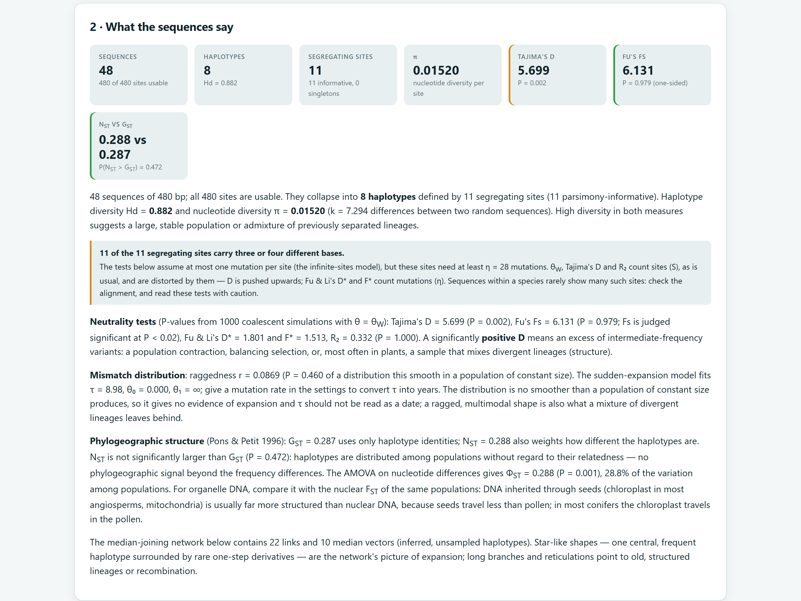
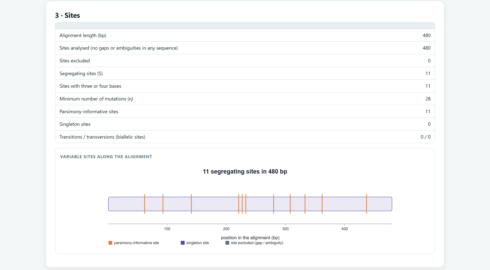
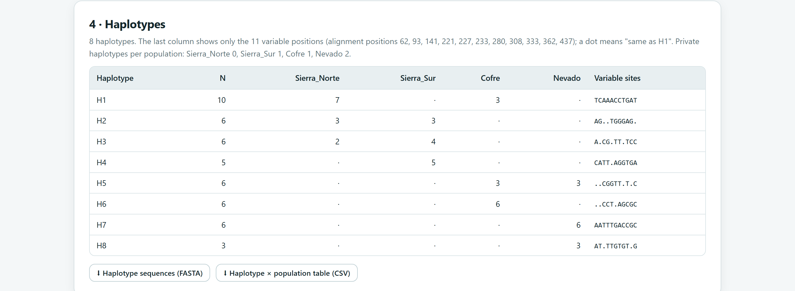
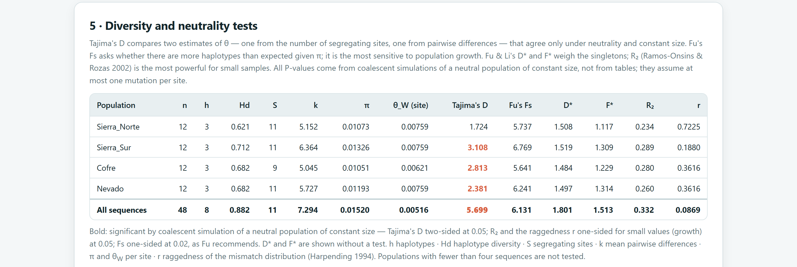
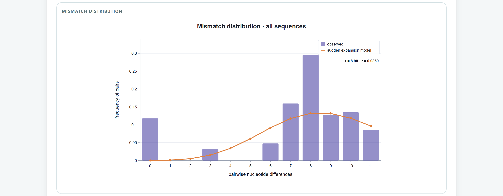
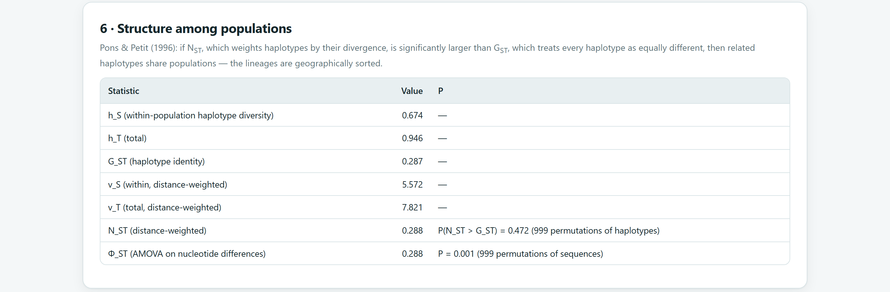
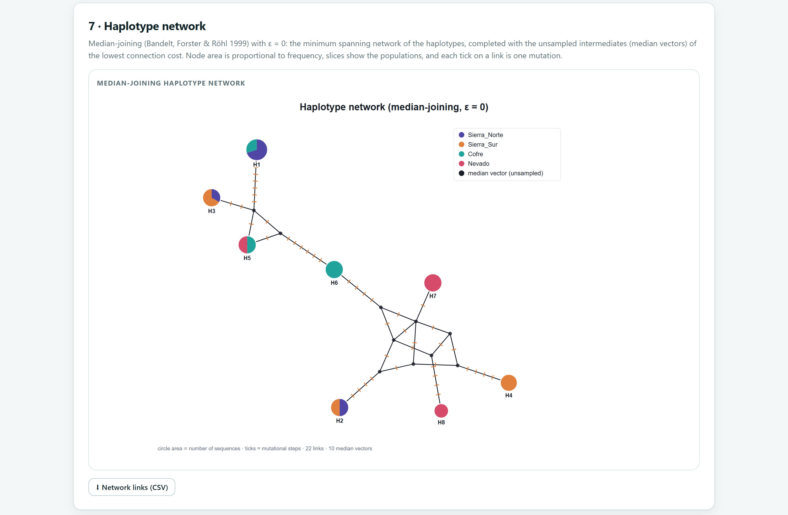
Las secuencias se simularon con un modelo HKY + Γ y un reloj relajado de 0.0015 sustituciones por sitio por millón de años sobre un árbol con la raíz en 62 Ma. Los géneros y los fósiles son inventados, así que cada fecha se puede comparar con la verdadera.
| Nombre | Nodo | Evidencia | Edades (Ma) | Forma |
|---|---|---|---|---|
| F1 | Corona de Fictaria + Modelanthus | Fósil del Rupeliano (Oligoceno temprano) | mínimo 27.82 · máximo suave 45 | lognormal |
| F2 | Corona de Demoxylon | Fósil del Aquitaniano (Mioceno temprano) | mínimo 20.44 | lognormal |
| F3 | Tallo de Probocarpa | Fósil del Chattiano (Oligoceno tardío) | mínimo 23.03 | exponencial |
| S1 | Corona de los cinco géneros | Secundaria, de un árbol publicado | 50 ± 4 | normal |
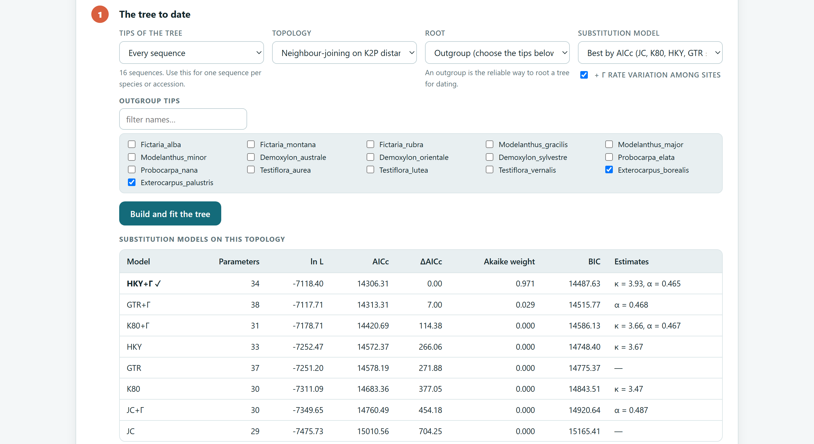
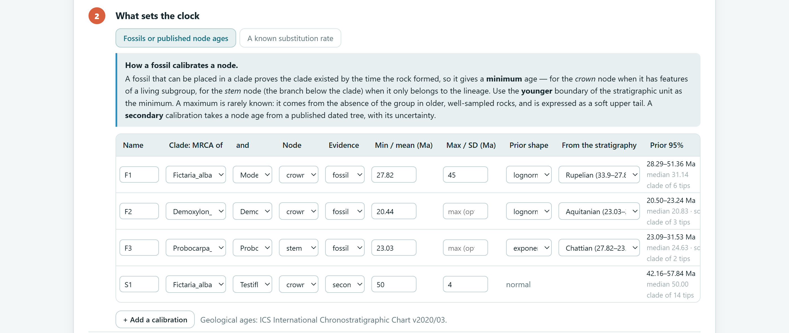
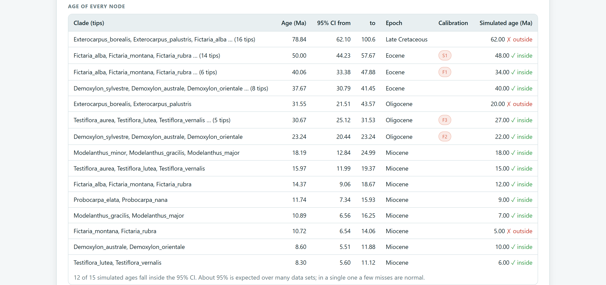
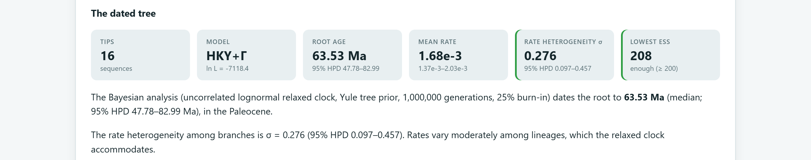
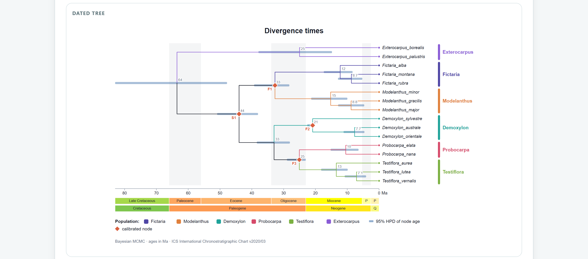
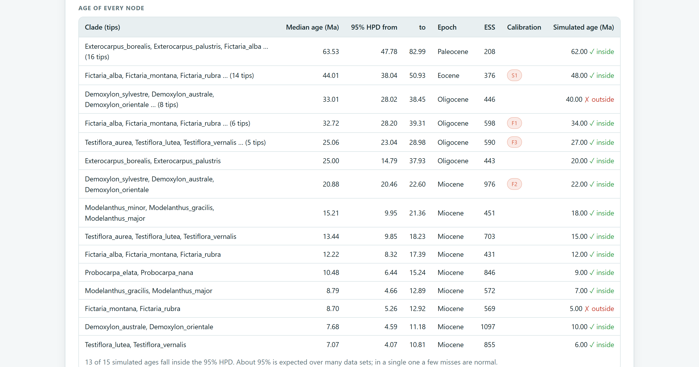
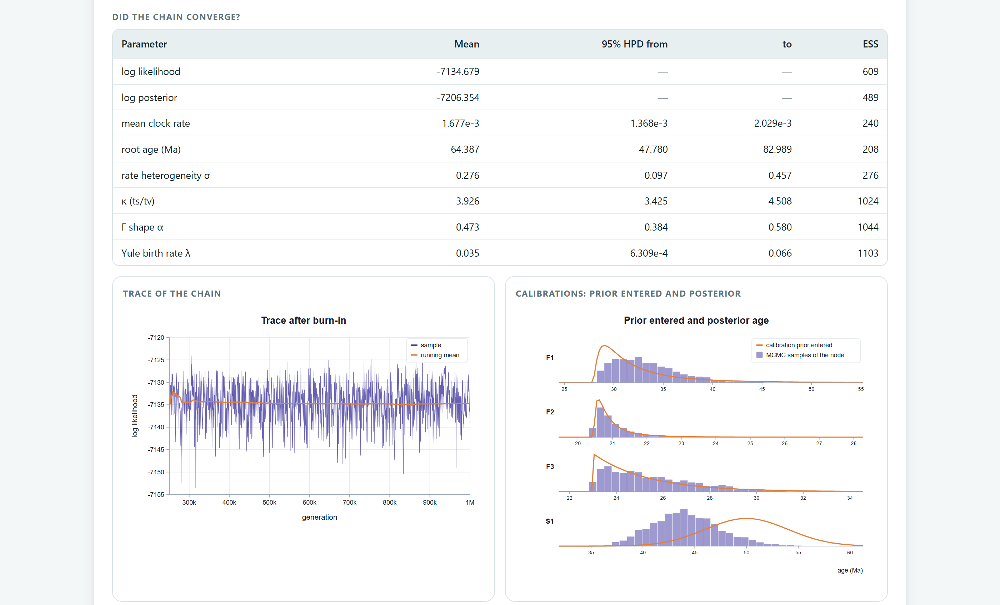
De la diversidad: n, h, Hd, π y S por población, con la deleción completa y los sitios analizados. De las pruebas: el estadístico, su valor P, el número de simulaciones y el modelo nulo (población neutral de tamaño constante). De la estructura: GST, NST y el número de permutaciones. De la red: el método y ε. Del fechado: modelo de sustitución, árbol y raíz, cada calibración con su evidencia, forma y edades (o la tasa y su fuente), reloj, modelo del árbol, longitud de la cadena, burn-in, ESS mínimo y la semilla. La sección de métodos del informe del Bloque 10 redacta todo esto.
Para este manual, Hd, k, π, S, η y θW del pino se recalcularon de forma independiente sin diferencias; GST y NST se recalcularon con las ecuaciones 6 y 7 de Pons y Petit (10−16), el índice r con la fórmula de Harpending y los números de Stirling de Fs con aritmética exacta de enteros. Con 4000 muestras de un simulador coalescente independiente, D, D* y F* tuvieron media cercana a 0. Con 250 muestras neutrales, las pruebas rechazaron 4.8 % (D), 3.6 % (Fs, α = 0.02), 4.0 % (R2) y 6.4 % (r). El modelo de expansión coincidió con una implementación independiente, y la red median-joining reprodujo los casos de estrella, cadena, cuadrado y cubo. El motor de fechado pasa sus pruebas de matrices de transición, distribución Γ, verosimilitud exacta y colocación de la raíz, y en el ejemplo recupera 13 de 15 edades simuladas.
El siguiente capítulo vuelve a los marcadores para estudiar la demografía y el espacio: el Bloque 9 busca cuellos de botella, estima el tamaño efectivo, mide la estructura genética espacial y la autofecundación, y compara la diferenciación de caracteres con la genética.